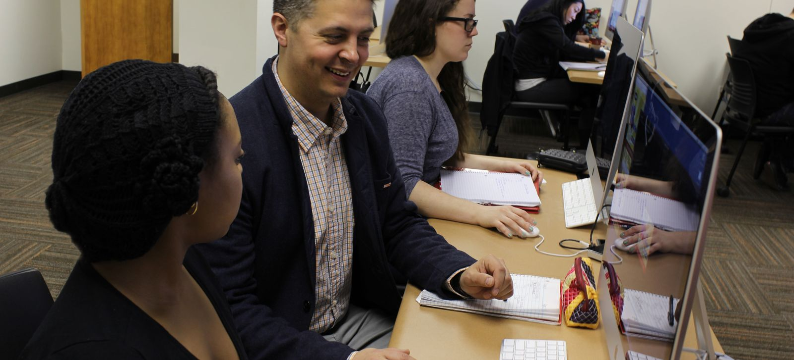
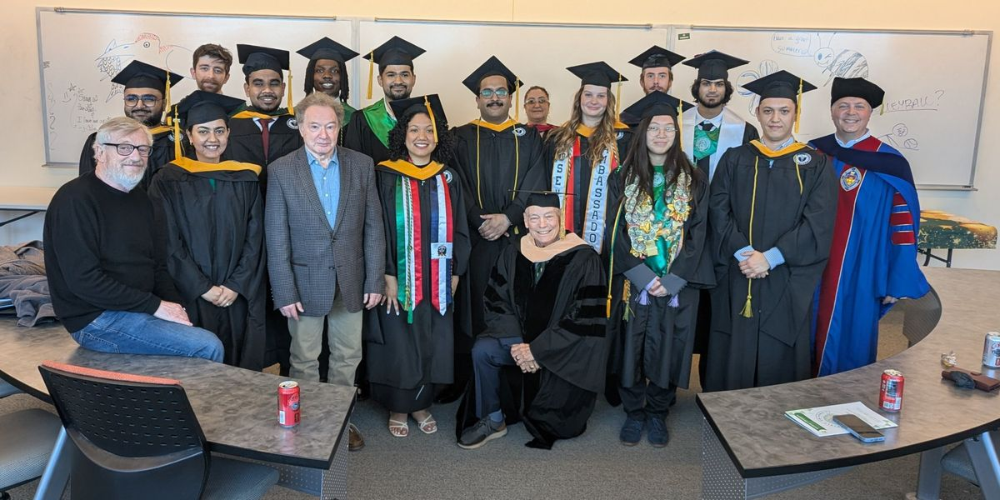

Teaching
I meet students where they are. My courses are built around creative, hands-on projects, and I use Learner Experience Design to shape them around the students in the room.

My approach
I'm an artist turned scientist, so I understand the challenges people face when they first learn technology and programming. That's why I care most about students who have struggled with STEM before.
My courses center on creative, innovative projects that build computational thinking. Students learn by making things.
Designing with students
I approach a course the way a UX designer approaches a product: start with the people who will use it. That's the heart of the Learner Experience Design process I share with other faculty in workshops and keynotes.
I've developed courses in interactive media, user experience, web design and development, usability, computer graphics, animation, and digital photography.
Courses
Roosevelt University
- CST 382Computer Graphics
- CST 390AI, Ethics, and the Human Condition
- CST 405Algorithm Design
- CST 431Human-Computer Interaction
Judson University
- CSC 111Computing in Context
- CSC 205Software Design Patterns and Principles
- CSC 212Database Systems
- CSC 301Reflecting on the Conversation
- CSC 302Data Structures and Algorithms II
- CSC 430Web Development
- CSC 490Senior Project
- CSC 495Computer Science Internship
Bowling Green State University
- VCT 2660Introduction to Interactive Media
- VCT 3500User Experience
- VCT 3660Applied Interactive Media Production
- VCT 4600Digital Photography
- VCT 4800Augmented and Virtual Reality
- VCT 4820Advanced Concepts of Multimedia Production
- VCT 4900Independent Study in Visual Communication Technology
- IDT 6820Interaction Design
- LRND 6840Independent Study in Learning Design
- LRND 6850Directed Readings in Learning Design
- TECH 4240Media Usability Studies
DePaul University
- GPH 211Perceptual Principles for Digital Environments I
- GPH 212Perceptual Principles for Digital Environments II
- GPH 321Computer Graphics Development I
- GPH 325Survey of Computer Graphics
- GPH 329Computer Graphics Development II
- GPH 338Survey of 3-D Animation
- GPH 380Visualization
- GPH 425Survey of Computer Graphics
- GPH 438Computer Animation Survey
- GPH 448Computer Graphics Scripting
- GPH 465Survey of Visualization Applications
- GPH 580Real-Time Rendering Techniques
- HCI 201Multimedia and the World Wide Web
- IT 231Web Development I
- DC 125Digital Photography
Moraine Valley Community College
- MRT 130Computers in Allied Health
Mentoring student research
I mentor undergraduates through independent studies, honors theses, summer research, and micro-internships. At Bowling Green, I supervised 25 undergraduate independent study projects, from sign language learning apps to usability studies of campus systems. That work earned the 2018 Elliott L. Blinn Award and the 2022 Undergraduate Faculty Mentor of the Year award. At Roosevelt, I received the 2025–2026 Mentor Award.

Recent student projects at Roosevelt
- Fall 2026Measuring automation bias in human-AI collaboration spaces among computer science studentsRenata Rivera
- Fall 2026A framework for evaluating AI-generated career adviceMark Devereux
- Sum 2026Comparing text-based AI and AI avatar interfaces for career advising in a university settingMicro-internship: Mark Devereux, Abygail Martinez, Eyad Radi, and Albrice Waddy
- Sum 2026Student perceptions of AI-generated assignments: Comparing traditional, personalized, and Socratic-style learning activitiesBianca Malagon
- Spr 2026Programmed companionship: How emotional connections between humans and AI chatbots developMariel Chua
- Spr 2026Computerized translation of written English to ASL glossJair Banuelos
- Fall 2025Machine learning techniques for analyzing musicGigi Castro
- Sum 2025Learner experience design interviews for personalized learningMicro-internship: Keyla Estrada, Imani Lamb, Mohammed Umar, Lakshay Vivek, and Nurdan Zholonova
Graduate committees
Doctoral
- 2027Brian Sterud, Technology ManagementCommittee member, Indiana State University
- 2023Jason Davidson, Technology ManagementPrimary advisor, Indiana State University
- 2019Lauren Garskie, English Rhetoric and WritingCommittee member, Bowling Green State University
- 2019Nick Zoulek, Musical ArtsCommittee member, Bowling Green State University
- 2019Carrie Hamady, DieteticsCommittee member, Bowling Green State University
Master's
- 2026Gigi CastroChair. Computational identification of isolated musical components in mixed and remixed audio, Roosevelt University
- 2026Madeleine GonzalezCentralized digital identities and algorithmic influence, Roosevelt University
- 2025Riley HerbstLLM-based system for virtualization of the Field Museum's botanical collection, Roosevelt University
- 2025Ashish KarikereMeasuring robustness of embeddings and evaluating text similarity, Roosevelt University
- 2015Michael VanderpoolBowling Green State University
- 2012Kayleigh WilliamsBowling Green State University